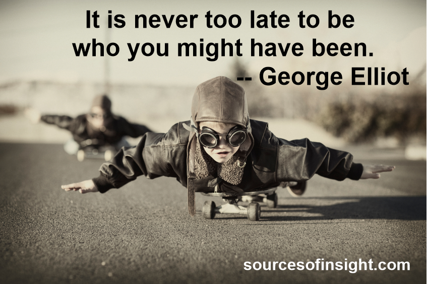

Whether you're having a rough day and need a pick-me-up to assure yourself
that it's all going to be OK,
or whether you're just looking for a mission
statement for the day, these inspirational quotes will
help you put one foot in
front of the other and make the small or sweeping changes that you desire. No
matter if
it's a movie star, a thought leader, Beyoncé, or a 17th century writer, you're sure to find
an
inspirational quote that speaks to your drive and determination. Here are the best
inspirational quotes for you!
Inspirational Quotes
- " When you have a dream, you've got to grab it and never let go."
— Carol Burnett
- " Nothing is impossible. The word itself says 'I'm possible!'
— Audrey Hepburn
- " There is nothing impossible to they who will try."
— Alexander the Great
- " The bad news is time flies. The good news is you're the pilot."
— Michael Altshuler
- " Life has got all those twists and turns. You've got to hold on tight and off you
go."
— Nicole Kidman
- " Keep your face always toward the sunshine, and shadows will fall behind you."
— Walt Whitman
- " Be courageous. Challenge orthodoxy. Stand up for what you believe in.
When you are in your rocking
chair talking to your grandchildren many
years from now, be sure you have a good story to tell."
— Amal Clooney
- " You make a choice: continue living your life feeling muddled in this abyss of
self-misunderstanding, or you find your identity independent of it. You draw your own box."
— Duchess Meghan
- " Success is not final, failure is not fatal: it is the courage to continue that
counts."
- Winston Churchill
- " You define your own life. Don't let other people write your script."
— Oprah Winfrey
- " You are never too old to set another goal or to dream a new dream."
— Malala Yousafzai
- " At the end of the day, whether or not those people are comfortable with
how you're
living your life doesn't matter. What matters is whether you're comfortable with it."
— Dr. Phil
- " Spread love everywhere you go."
— Mother Teresa
- " Do not allow people to dim your shine because they are blinded.
Tell them to put
some sunglasses on."
— Lady Gaga
- " You don't always need a plan. Sometimes you just need to breathe, trust,
let go and
see what happens.
— Mandy Hale
- " You can be everything. You can be the infinite amount of things that people are."
— Kesha
- " What lies behind you and what lies in front of you, pales in comparison to what lies
inside of you."
— Ralph Waldo Emerson
- " I want to be in the arena. I want to be brave with my life. And when we make the choice
to dare greatly,
we sign up to get our asses kicked. We can choose courage or we can choose comfort,
but we can't have both. Not at the same time."
— Brene Brown
- " Belief creates the actual fact."
— William James
- "No matter what people tell you,
words and ideas can change the world."
— Robin Williams

- " I'm not going to continue knocking that old door that doesn't open for me.
I'm going
to create my own door and walk through that."
— Ava DuVernay
- " It is during our darkest moments that we must focus to see the light."
— Aristotle
- " Not having the best situation, but seeing the best in your situation is the key to
happiness."
— Marie Forleo
- " Believe you can and you're halfway there."
- Theodore Roosevelt
- " Weaknesses are just strengths in the wrong environment."
— Marianne Cantwell
- " Silence is the last thing the world will ever hear from me."
— Marlee Matlin
- " In a gentle way, you can shake the world."
— Mahatma Gandhi
- " Learning how to be still, to really be still and
let life happen—that stillness
becomes a radiance."
— Morgan Freeman
- " All you need is the plan, the road map, and
the courage to press on to your
destination."
— Earl Nightingale
- " We must let go of the life we have planned,
so as to accept the one that is waiting
for us."
— Joseph Campbell

- “You do not find the happy life. You make it.”
– Camilla Eyring Kimball
- “The most wasted of days is one without laughter.”
– E.E. Cummings
- “Stay close to anything that makes you glad you are alive.”
– Hafez
- “Happiness is not by chance, but by choice.”
– Jim Rohn
- “Life changes very quickly, in a very positive way, if you let it.”
– Lindsey Vonn
- “Impossible is for the unwilling.”
– John Keats
- “No pressure, no diamonds.”
– Thomas Carlyle
- “Believe you can and you’re halfway there.”
– Theodore Roosevelt
- “Failure is the condiment that gives success its flavor.”
– Truman Capote
- “Stay foolish to stay sane.”
– Maxime Lagacé
- “Whatever you are, be a good one.”
– Abraham Lincoln
- “Wherever you go, go with all your heart.”
– Confucius
- “Dream big and dare to fail.”
– Norman Vaughan
- “You are enough just as you are.”
– Meghan Markle
- “Every moment is a fresh beginning.”
– T.S. Eliot
- “Turn your wounds into wisdom.”
– Oprah Winfrey
- “The journey of a thousand miles begins with a single step.”
– Lao Tzu
- “If you’re going through hell, keep going.”
– Winston Churchill
- “If I cannot do great things, I can do small things in a great way.”
– Martin Luther King Jr.
- “Some people look for a beautiful place. Others make a place beautiful.”
– Hazrat Inayat Khan
- “Success is the progressive realization of predetermined, worthwhile, personal goals.”
– Paul J. Meyer
- “Success is a journey, not a destination.”
– Arthur Ashe
- “Success is walking from failure to failure with no loss of enthusiasm.”
– Winston Churchill
- “Success is liking yourself, liking what you do, and liking how you do it.”
– Maya Angelou
- “If you want to live a happy life, tie it to a goal, not to people or things.”
– Albert Einstein
- “Love yourself first and everything else falls into line. You really have to love yourself to get anything done in this world.”
– Lucille Ball
- “A man is a success if he gets up in the morning and gets to bed at night, and in between he does what he wants to do.”
–Bob Dylan
- “Success usually comes to those who are too busy to be looking for it.”
– Henry David Thoreau
- "When you've seen beyond yourself, then you may find, peace of mind is waiting there."
– George Harrison
- “A true friend is one who overlooks your failures and tolerates your success.”
– Doug Larson

- “Success seems to be connected with action. Successful people keep moving.
They make mistakes but they don’t quit.”
– Conrad Hilton
- "Faith is love taking the form of aspiration.”
– William Ellery Channing
- "When it comes to luck, you make your own."
– Bruce Springsteen
- "We generate fears while we sit. We overcome them by action."
– Dr. Henry Link
- "Wake up determined, go to bed satisfied."
– Dwayne "The Rock" Johnson
- "Nobody built like you, you design yourself."
– Jay-Z
- "Our lives are stories in which we write, direct and star in the leading role. Some chapters are happy
while others bring lessons to learn, but we always have the power to be the heroes of our own adventures."
– Joelle Speranza
- "Life is like riding a bicycle. To keep your balance, you must keep moving."
– Albert Einstein
- "Don't try to lessen yourself for the world; let the world catch up to you."
–Beyoncé
- "I'm realizing how much I've diminished my own power. I'm not doing that no more."
–Alicia Keys
- "We are not our best intentions. We are what we do."
–Amy Dickinsons
- "You have to be where you are to get where you need to go."
–Amy Poehler
- "Don't be afraid. Because you're going to be afraid. But remember when you become afraid, just don't be afraid."
–Joan Jett
- "We need to take risks. We need to go broke. We need to prove them wrong, simply by not giving up."
–Awkwafina
- "The only limit to our realization of tomorrow will be our doubts today."
– Franklin Delano Roosevelt
- "It is never too late to be what you might have been."
–George Eliot
- "You do not find the happy life. You make it."
–Camilla Eyring Kimball
- "We all have problems. But it's not what happens to us, [it 's] the choices we make after."
– Elizabeth Smart
- "You don’t have to be defined or confined by your environment, by your family circumstances,
and certainly not by your race or gender."
– Mariah Carey
- "When we let fear be our master, we cannot be happy and free as a butterfly. But when we choose to trust the
ourney and embrace love and joy, we are free to fly."
– Annicken R. Day
- "Definitions belong to the definers, not the defined."
– Toni Morrison
- "You must find the place inside yourself where nothing is impossible."
– Deepak Chopra
- "Whatever you think the world is withholding from you, you are withholding from the world."
– Eckhart Tolle
- "Perfection is not attainable, but if we chase perfection we can catch excellence."
– Vince Lombardi
- "A lot of people are afraid to say what they want. That's why they don't get what they want."
– Madonna
- "We have to let go of who we think we should be and embrace what is."
– Achea Redd
- "Being vulnerable is a strength, not a weakness."
– Selena Gomez
- "In order for the light to shine so brightly, the darkness must be present."
– Sir Francis Bacon
- "I don't look ahead. I'm right here with you. It's a good way to be."
– Danny DeVito
- "It ain't about how hard you hit. It’s about how hard you can get hit and keep moving forward."
– Sylvester Stallone in Rocky Balboa
- "I will not let anyone scare me out of my full potential."
– Nicki Minaj
- "We have to be better. We have to love more, hate less. We've gotta listen more and talk less.
We've gotta know that this is everybody's responsibility."
– Meghan Rapinoe
- "Trying to grow up is hurting. You make mistakes. You try to learn from them, and when you don't, it hurts even more."
– Aretha Franklin
- "Never bend your head. Always hold it high. Look the world straight in the eye."
–Helen Keller
- "The power of imagination makes us infinite."
– John Muir
- "The only journey is the one within.""
–Rainer Maria Rilke
- "If my mind can conceive it, if my heart can believe it, then I can achieve it."
– Muhammad Ali
- "We must let go of the life we have planned, so as to accept the one that is waiting for us."
– Joseph Campbell
- "You can be everything. You can be the infinite amount of things that people are."
– Kesha
- Clouds come floating into my life, no longer to carry rain or usher storm, but to add color to my sunset sky."
– Rabindranath Tagorell

Made in ♥ with Preethi Alle and Bhargavi Thati